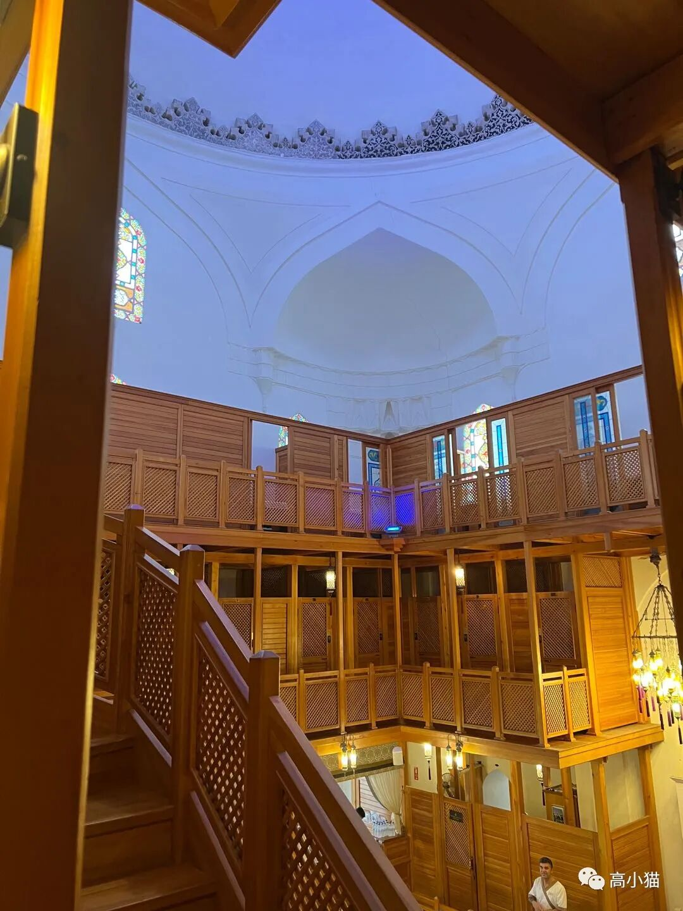
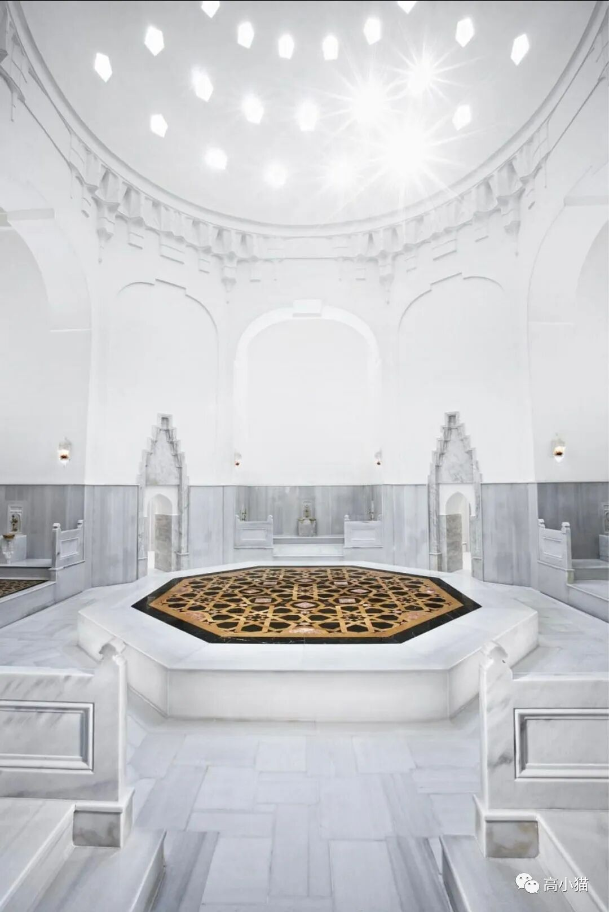
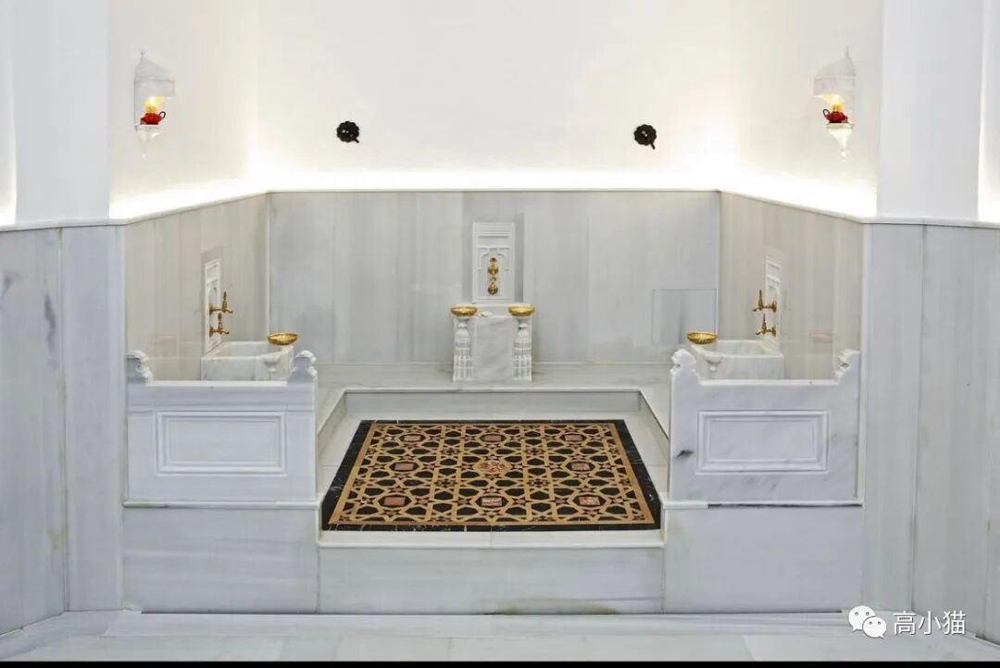
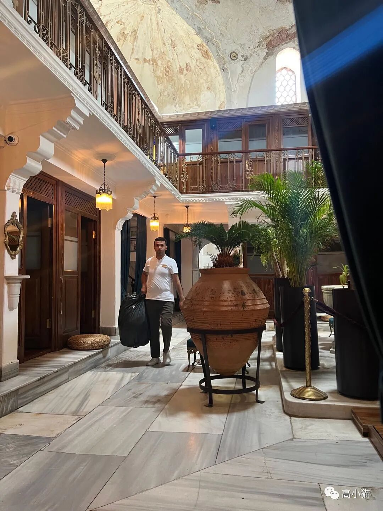
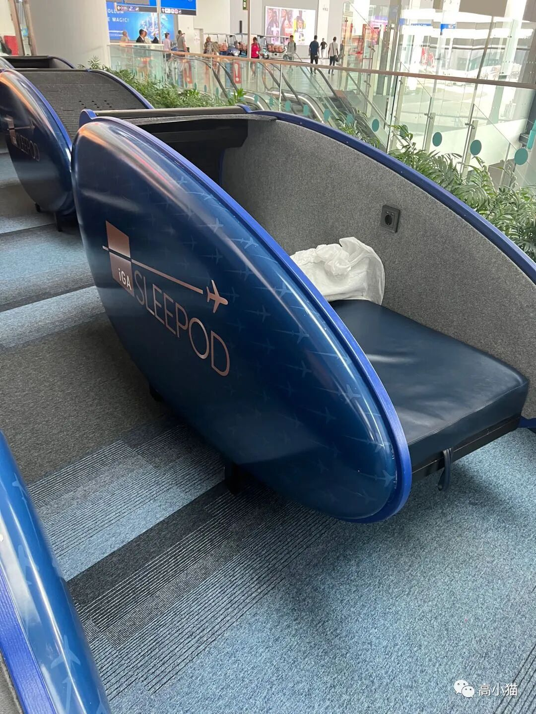
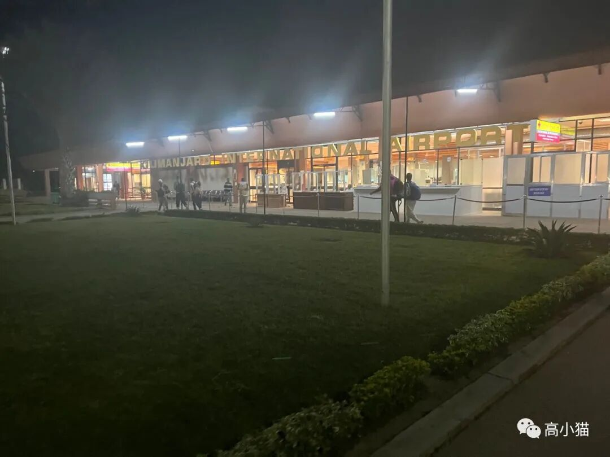

从sfo出发去坦桑尼亚已经过去两天了，但是还没到坦桑尼亚是什么体验….
这个还要从我买的机票说起，我买的是turkish airline从sfo去jro的机票（坦桑尼亚乞力马扎罗山那边的机场）。这个机票会在土耳其的伊斯坦布尔转机，中间connection时间为一个半小时。之所以选这个航班，主要是因为飞行时间比较短，20多个小时就能到（其实也很长了，但是这已经是最短的航线了）。
不幸的是，我的从sfo去ist（伊斯坦布尔机场）的航班延误了将近一个小时，当我落地的时候，那个从ist去jro的航班已经快登机结束了。但是因为这两张票是联程机票，我还是有一些侥幸心理，觉得第二个航班会也稍微延误一下来等我。毕竟不然的话，他们就得赔偿我，有点划不来。
谁知道第二班航班非常准时地出发了，当我赶到登机口的时候，他们已经停止登机了….这时候我就有些绝望了。航空公司的人似乎对此见怪不怪，让我去他们的help desk排队，走了半天过去，发现那边排了有五六十号人，至少有一半是因为班机延误出现这个问题的，还都是不同的航班。
排了一会儿队以后，工作人员又让那些需要换票的人走去另外一个窗口排队，在走了10分钟以后终于到了….当我终于排队排到工作人员前之后，我更绝望地得知下一班航班要整整再等一天。工作人员让我入境土耳其，说他们会给我安排宾馆，也会有接送大巴，然后帮我换了票，就结束了….我要求赔偿，他让我自己去打电话找客服，他们不管。
看这个样子再怎么愤怒，跟工作人员吵也没用了。反正飞机已经起飞了，我查了一下航班，确实从ist去jro的飞机很少，还有一班一个半小时后由卡塔尔航空operate的飞机，先飞多哈，然后再去jro。我尝试去订那个机票，但是无论如何在最后购买的页面也无法确认购买，可能是因为飞机马上要飞了，不卖了。而且我的行李还在turkish airline这里，想来想去还是不折腾了，乖乖入境土耳其去吧。
于是我和坦桑尼亚当地的地接旅行社讲了一下情况。因为我原定到了坦桑尼亚当地以后，应该在第二天一早从jro机场附近飞塞伦盖蒂，因此那个航班也得更改。地接旅行社的人还是挺给力的，跟我说没问题。
入境土耳其的签证倒是很简单。只要在网上填一个表，缴纳50欧元就行了。我之前plan好的行程里就原定要在坦桑尼亚的行程以后来土耳其再玩一段时间，所以当时就把签证准备好了。入境的地方连签证都没看，扫了一下我的护照就让我进了，可能他们系统里有我的护照相关的签证记录吧。
入了境以后，我决定把行李拿出来。一方面对于turkish airline的不靠谱我有点受够了。他们虽然跟我强调说会帮我转运到jro，我还是很不放心。另一方面我还要在土耳其过一夜，还有一些洗漱的东西在行李箱里。
在我的坚持下turkish airline管行李lost and found的工作人员最终同意帮我把行李拿出来，等了大约半小时，行李终于出来了。
之后再去他们的另一个hotel desk报道，然后坐上他们安排的大巴，去hotel。
大巴开起来以后我发现行进的方向有些不对，并没有朝着伊斯坦布尔市中心开，而是往郊外开去。在开了大约一个小时后终于到了宾馆，位于伊斯坦布尔的新开发区，离市中心一个小时的车程。好在宾馆条件还可以，看上去还凑合。
我的艰难的第一天终于要结束了。躺在宾馆的床上我感觉坐立不安，又生气又懊恼。气turkish airline如此地不靠谱，同时又懊恼自己当初没有订一个更稳妥的航班，或者就和另外几个小伙伴一起订另外一个航班，这样要延误也是一起延误。
第二天一大早我就醒了，想着反正行程也浪费了，不如就去伊斯坦布尔的市区看看好了。伊斯坦布尔当地的土耳其浴是挺有名的，我出发前也已经做了一些攻略。对于一个旅客来说，直接无脑去tripadvisor上排名高的地方虽然比较贵，但是不容易出错。
我打了uber，花了大约40分钟抵达了伊斯坦布尔市中心蓝色清真寺附近的排名第一的一家土耳其浴店。里面古色古香的，看上去很像样。可惜门口接待的人说今天已经基本定满了，只剩下下午1点的一个半小时的slot。我想着宾馆的大巴预定是下午3点出发，我做完30分钟是1:30，再40分钟打车回去，离3点应该绰绰有余。于是就订了。
不过我还是觉得不太满意，于是准备去排名第二的那家土耳其浴碰碰运气。先是打电话过去，谁知道那边电话里的接线员说他们早就定满了，他们这里基本每天都会定满，所以一定要提前预定。
google map上关于这家排名第二的店的评价并不是很好，说这家店就是里面比较漂亮，服务很垃圾，而且很贵，完全就是tourist trap，要是可能的话就进去拍个照片就好了，或者选个最便宜的套餐做一下。因为排名第二的店离排名第一的店走路就10分钟，我就一路逛了过去，想着是不是能混进去拍个照片。
到了以后进去一看，真的很漂亮。第一家店里面的装修是有点旧的，上面的拱顶的墙上有点斑驳，下面的换衣间也是那种有点年头的木屋的感觉，有一种历史的厚重感。而这第二家店则新很多，一切透露出一种奢华感，而且非常大气，拱顶非常漂亮，感觉像是把澡堂子开到了宏伟的清真寺里面。
而且出乎意料的是，那个接待人员说他们现在还有空位，而且还可以做比较长的那种项目。我感觉机不可失，以后估计再也不会来了，于是就立马决定进去试试看。
土耳其浴是一种挺特殊的东西。它奉行男女隔离，整个澡堂分为男用和女用两部分，男的这边服务人员也都是男的，女的那边也是一样。搓澡则是和国内挺像的，也是让你趴着，一位大叔给你用搓澡手套全身上下搓一遍。
然后按摩师还很喜欢一桶一桶地往你身上浇水。他们还有一种专门的毛巾，可以挤出来很多泡泡，铺在你身上，再帮你按摩。
第二个浴场的大厅，浴场里面不太好拍
网图，中间的搓澡台
旁边接水的地方
第一个浴场大厅我个人感觉土耳其浴的环境非常重要，一边被搓澡，一边看着高耸的拱顶，透过天花板孔洞照进来的阳光，真的让人可以彻底放松下来。这一点上排名第二的土耳其浴场做得更好，我个人更喜欢一点。
做完土耳其浴时间也差不多了，我也就回了宾馆，整理好行李，坐上大巴到了机场。虽然机场的队伍还是很长，但是一路上有惊无险，最终坐上了去坦桑尼亚的航班，顺利到达了。

机场的sleeping pod，可以小睡一会儿
JRO机场现在已经是坦桑尼亚的凌晨两点，终于见到了和我一起制订行程的旅行社的工作人员，今晚会在JRO附近的小镇阿鲁沙住一晚，明天一大早会上飞机飞去塞伦盖蒂大草原，和小伙伴们汇合。
今天就写到这儿～